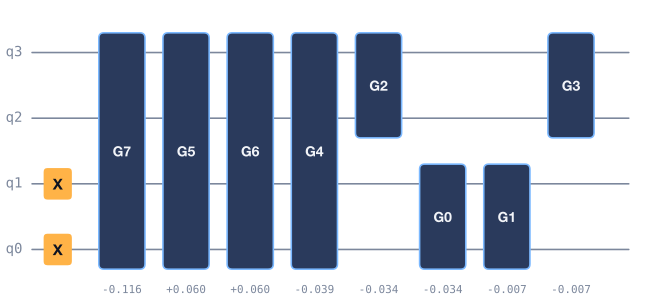

One-shot quantum chemistry circuits: a reproduction of ADAPT-GQE, and what it does and does not establish
Quantinuum, NVIDIA and Pfizer's ADAPT-GQE trains a transformer on ADAPT-VQE circuits so that, for a new molecular geometry, it writes the whole circuit, operators and rotation angles, in one forward pass instead of running ADAPT's operator search and VQE loop. We rebuild that pipeline at small scale in Qiskit (chemistry, ADAPT teacher, Hamiltonian-conditioned transformer, GRPO, self-distillation, budget-conditioned generation, IonQ execution) for four active-space problems of 2 to 8 qubits, and score it once on test_fresh: 14–20 random geometries per molecule drawn with a fixed seed after development finished.
One-shot generation works inside the training range. With zero quantum evaluations to propose the circuit, the generated circuits land at a median of 0.002 mHa (LiH) to 0.56 mHa (H₄) from the exact energy, where fresh ADAPT needs 155–949 quantum evaluations per geometry. The decisive ingredient, though, is not the transformer but fixing PySCF's orbital sign gauge: with it, a plain kernel ridge regressor on the Hamiltonian coefficients matches or beats the transformer at every training-set size we tried. Energy-reward GRPO and self-distillation did not improve held-out error, and nothing one-shot extrapolates beyond the training range.
On IonQ's Forte 1 noise-model simulator, H₂'s 4-CX circuit measured +7.8 ± 5.8 to +25.0 ± 6.4 mHa across three runs, and LiH's 172-CX circuit about 460 mHa off: gate count dominates. The evidence supports a narrower contribution than the architecture suggests: a complete, open reproduction, an untouched-test benchmark against strong baselines, and the gauge-fixing finding. It does not establish that the transformer beats simpler regressors here, a wall-clock speedup at 2–8 qubits, or quantum advantage.
1. The problem is the cost per geometry
To find a molecule's ground-state energy on a quantum computer, ADAPT-VQE builds a compact circuit one operator at a time: every step measures energy gradients for a whole pool of candidate operators and re-optimises all the angles. That costs hundreds of quantum evaluations per molecular geometry, repeated from scratch for every new geometry. On our 8-qubit H₄ chain a fresh ADAPT run spends 949 of them per untouched geometry (Table 2). A workflow that scans many conformers or bond lengths pays that bill each time.
The question is whether a model trained on ADAPT-VQE's own circuits can propose the whole circuit for a new geometry in one shot, how accurate that proposal is against strong classical and quantum baselines, and what it costs on IonQ's hardware models.
Units. Errors are |E − EFCI| in milli-Hartree against exact diagonalisation of the same active-space Hamiltonian; chemical accuracy is ≤ 1.6 mHa. Quantum evaluations count energy evaluations plus ADAPT pool-gradient evaluations spent to propose the circuit for one geometry; one BFGS gradient call counts as one, as everywhere in the code (on hardware, parameter-shift gradients cost about 2 × the number of angles). CX is the Qiskit CX-basis count.
"Zero" is not zero cost. One-shot generation makes no quantum energy evaluations to propose the circuit. Everything around it still costs something, and the workbench reports each part separately: building the Hamiltonian (classical SCF and integrals), training the model (the ADAPT teacher runs and the fit), grading against an exact reference, best-of-K ranking (K energy evaluations), refinement, and measuring the energy on a device (shots × measurement groups).
2. The pipeline
One run is a pipeline with a training loop in its middle (Figure 1). The chemistry stage builds frozen-core active-space Hamiltonians and exact energies; ADAPT-VQE is the teacher, with per-step cost logs; its circuits are relabelled in a fixed orbital sign gauge with one canonical operator sequence per molecule; a transformer with an operator head and a von Mises angle head learns to write them; GRPO, self-distillation and budget conditioning then fine-tune it on an energy reward. At inference, one forward pass proposes the circuit, an independent grader scores it, and the energy is measured with every measurement group packed into one circuit.
genqai/chemistry.py, adapt.py, features.py, model.py, rl.py, grading.py, measure.py.
scripts/make_site_cover.py from results/lih4/gen_oneshot.jsonl.3. Setup
| System | Active space | Mapping | Qubits | Geometries |
|---|---|---|---|---|
h2 · H₂ | CAS(2e, 2o) | parity, 2-qubit reduced | 2 | 21 grid + 14 fresh |
lih4 · LiH | CAS(2e, 3o), frozen core | parity | 4 | 76 grid + 14 fresh |
lih6 · LiH | CAS(2e, 4o), σ + one π | parity | 6 | 46 grid + 14 fresh |
h4 · H₄ chain | CAS(4e, 4o), linear chain (a, b, a) | Jordan–Wigner | 8 | 64 grid + 20 fresh |
Splits. Splits are assigned per geometry before any labels exist: training and validation points, interpolation test points, a held-out contiguous interval, and extrapolation beyond the range. Those grid test splits were looked at while the label recipe and training were tuned, so they measure development, not generalisation. test_fresh is the result: geometries drawn with a fixed seed after development finished, under a rule fixed before any fresh result was computed (most inside the training range, a few beyond the grid edge), scored once with frozen checkpoints. Every headline number in this paper is on test_fresh; the grid-split tables are on the benchmarks page.
Gauge fixing. PySCF's molecular-orbital signs flip arbitrarily between neighbouring geometries, and the optimal circuit angles flip with them. A model, or a nearest-neighbour lookup, that sees raw ADAPT labels is fitting noise it cannot predict from the Hamiltonian. We fix the orbital phase convention (genqai/features.py) and give each molecule one canonical operator sequence (scripts/make_canonical_teacher.py), so the labels become a smooth function of geometry.
Baselines. Hartree–Fock and CCSD (classical); UCCSD-VQE; fresh ADAPT-VQE (the method being replaced) and ADAPT warm-started from the nearest training geometry; copying the nearest training circuit, naive, with orbital signs fixed, and with the canonical sequence, each also with angle refinement; kernel ridge regression and interpolation of the angles on the same canonical sequence. Generators: the SFT transformer, GRPO and self-distilled variants, and the budget-conditioned policy, each one-shot, best of 16, and with angle refinement. Hyperparameters are chosen on the validation split.
4. Results
4.1 One shot, on untouched H₄ geometries
On the 8-qubit H₄ chain the SFT transformer's one-shot circuits reach a median of 0.56 mHa with zero quantum evaluations, and 65% of untouched geometries are within chemical accuracy (Figure 3, Table 2). Best of 16 lifts that to 80% for 16 evaluations; a short angle refinement takes every geometry there for 48, against 949 for a fresh ADAPT run. The simplest learned baseline does better than all of them at zero cost: kernel ridge regression on the gauge-fixed canonical labels has a median of 0.014 mHa, a worst case of 0.59 mHa, and 100% within target. The naive nearest-circuit copy shows what the gauge does: a worst case of 520 mHa, and 4.29 mHa once the signs are fixed.
results_fresh/h4/*.jsonl.| Method | Median |err| mHa | Worst mHa | ≤ 1.6 mHa | CX | Quantum evals |
|---|---|---|---|---|---|
| Hartree–Fock | 157 | 212 | 0% | 0 | 0 |
| CCSD (classical) | 0.098 | 4.11 | 80% | – | 0 |
| UCCSD-VQE | 0.595 | 4.38 | 80% | 736 | 37 |
| Fresh ADAPT-VQE | < 0.001 | 0.101 | 100% | 865 | 949 |
| Warm-started ADAPT (nearest training geometry) | < 0.001 | 0.101 | 100% | 898 | 145 |
| Copy nearest training circuit (naive) | 4.21 | 520 | 35% | 898 | 0 |
| Copy nearest, orbital signs fixed | 1.05 | 4.29 | 65% | 898 | 0 |
| Transformer (SFT), one shot | 0.555 | 14.6 | 65% | 923 | 0 |
| Transformer (SFT), best of 16 | 0.238 | 12.7 | 80% | 923 | 16 |
| Transformer (SFT) + angle refinement | 0.002 | 0.570 | 100% | 923 | 48 |
| Kernel-ridge angle regression, one shot | 0.014 | 0.588 | 100% | 923 | 0 |
4.2 LiH, and the edge of the training range
On LiH every one-shot method, transformer or regression, reaches 71% within chemical accuracy on test_fresh (Tables 3 and 4), and the reason is the split, not the methods: the 10 in-range geometries are all correct and the 4 extrapolated ones (4.1–4.4 Å) all fail, by 6–150 mHa. Refinement, warm-started ADAPT and fresh ADAPT don't fail there, because they spend evaluations on the geometry in front of them. Over all fourteen geometries the transformer's median is 0.001 mHa (4 qubits) and 0.002 mHa (6 qubits).
| Method | Median |err| mHa | Worst mHa | ≤ 1.6 mHa | CX | Quantum evals |
|---|---|---|---|---|---|
| Hartree–Fock | 92.2 | 185 | 0% | 0 | 0 |
| Fresh ADAPT-VQE | < 0.001 | < 0.001 | 100% | 171 | 155 |
| Copy nearest training circuit (naive) | 0.027 | 33.9 | 71% | 172 | 0 |
| Transformer (SFT), one shot | 0.001 | 53.7 | 71% | 172 | 0 |
| Transformer (SFT) + angle refinement | < 0.001 | < 0.001 | 100% | 172 | 18 |
| Kernel-ridge angle regression, one shot | < 0.001 | 150 | 71% | 172 | 0 |
| Method | Median |err| mHa | Worst mHa | ≤ 1.6 mHa | CX | Quantum evals |
|---|---|---|---|---|---|
| Hartree–Fock | 94 | 176 | 0% | 0 | 0 |
| Fresh ADAPT-VQE | < 0.001 | < 0.001 | 100% | 297 | 249 |
| Copy nearest training circuit (naive) | 0.114 | 25.9 | 71% | 297 | 0 |
| Transformer (SFT), one shot | 0.002 | 26.5 | 71% | 298 | 0 |
| Transformer (SFT) + angle refinement | < 0.001 | < 0.001 | 100% | 298 | 28 |
| Kernel-ridge angle regression, one shot | < 0.001 | 15.6 | 71% | 298 | 0 |
4.3 What carries the accuracy
If the transformer were learning something regression cannot, it should pull ahead as data grows. It does not (Figure 4). On nested random training subsets, with every method one-shot, kernel ridge is at or below the transformer's median error at every size on both systems: on H₄ 2.6 against 7.5 mHa at 5 training geometries and 0.014 against 0.56 mHa on the full 35; on LiH-6q 0.078 against 0.20 mHa at 5. The full H₄ training set cost 32,429 teacher ADAPT evaluations to label.
results/learning_curve.jsonl.The ablations say where the accuracy comes from (benchmarks page, from results/ablations.md). On H₄ test_fresh, turning the gauge fix off takes kernel ridge from 100% to 80% within target and its worst case from 0.59 to 43.7 mHa, and the transformer's worst case from 14.6 to 65.7 mHa. Training on raw ADAPT labels instead of the canonical sequence drops kernel ridge to 45% and the transformer to 50%. Conditioning on the geometry instead of the Hamiltonian leaves kernel ridge at 5% (median 99.9 mHa): the Hamiltonian coefficients carry the orbital signs, the geometry does not.
4.4 Reinforcement learning, budgets, and the CX frontier
Energy-reward GRPO and self-distillation did not improve held-out error: on H₄ test_fresh the GRPO model's one-shot median is 0.562 mHa and the self-distilled one 0.598, against the SFT model's 0.555, all at 65% within target. What GRPO did make work is budget-conditioned generation: one model emits shorter circuits on request, about 722 CX instead of 923 on H₄, where the same budget policy trained by SFT alone is hundreds of mHa off. But kernel ridge on a fixed prefix of the canonical sequence does better at the same gate count (Figure 5): 75% within target at 720 CX on H₄ test_fresh, against 55% for the budget policy's best level at 722.
Hardware-aware optimisation moves the frontier, at a price. Greedily pruning operators and re-optimising the angles (genqai/optimize.py) reaches 1.6 mHa on 100% of untouched geometries with H₄ at 668 CX (from 923) and LiH-6q at 162 CX (from 298), below every zero-evaluation option at that accuracy. It spends about 2,400 (H₄) and 310 (LiH-6q) energy evaluations per geometry, more than fresh ADAPT's 949 and 249. It is a different cost class from one-shot generation, and once evaluations are allowed the starting generator stops mattering: the SFT and kernel-ridge starts end at the same circuits. Pruning without the exact reference (tolerance chosen on validation) gives nearly the same CX but only 90% within target on H₄ (Tables 5 and 6).
results/*/budget_frontier.jsonl, results_fresh/*/hw_opt.jsonl.| circuit | cost class | n | mean CX | median abs err (mHa) | max abs err | <= 1.6 mHa | mean quantum evals | same-CX KRR-prefix <= 1.6 | same-CX truncated ADAPT <= 1.6 |
|---|---|---|---|---|---|---|---|---|---|
| sft (as generated) | one-shot | 14 | 298 | 0.00233 | 26.5 | 71% | 0 | – | – |
| sft + prune/refine (oracle) | + energy evals | 14 | 162 | 0.901 | 1.6 | 100% | 315 | 36% | 71% |
| krr (as generated) | one-shot | 14 | 298 | 4.72e-06 | 15.6 | 71% | 0 | – | – |
| krr + prune/refine (oracle) | + energy evals | 14 | 162 | 0.901 | 1.6 | 100% | 308 | 36% | 71% |
| adapt (as generated) | ADAPT run | 14 | 297 | 8.88e-13 | 0.000308 | 100% | 249 | – | – |
| regress_prefix @ level 8 (VAL-chosen) | one-shot | 14 | 290 | 0.0728 | 89.2 | 71% | 0 | – | – |
| adapt @ level 6 (VAL-chosen) | ADAPT run, truncated | 14 | 245 | 0.524 | 0.694 | 100% | 147 | – | – |
| circuit | cost class | n | mean CX | median abs err (mHa) | max abs err | <= 1.6 mHa | mean quantum evals | same-CX KRR-prefix <= 1.6 | same-CX truncated ADAPT <= 1.6 |
|---|---|---|---|---|---|---|---|---|---|
| sft (as generated) | one-shot | 20 | 923 | 0.555 | 14.6 | 65% | 0 | – | – |
| sft + prune/refine (oracle) | + energy evals | 20 | 668 | 1.01 | 1.58 | 100% | 2438 | 60% | 65% |
| krr (as generated) | one-shot | 20 | 923 | 0.0143 | 0.588 | 100% | 0 | – | – |
| krr + prune/refine (oracle) | + energy evals | 20 | 668 | 1.01 | 1.58 | 100% | 2385 | 60% | 65% |
| adapt (as generated) | ADAPT run | 20 | 865 | 0.000163 | 0.101 | 100% | 949 | – | – |
| regress_prefix @ level 17 (VAL-chosen) | one-shot | 20 | 923 | 0.0143 | 0.588 | 100% | 0 | – | – |
| adapt @ level 15 (VAL-chosen) | ADAPT run, truncated | 15 | 831 | 0.0404 | 0.706 | 100% | 734 | – | – |
4.5 On IonQ, gate count is what matters
Every IonQ number here is from IonQ's cloud noise-model simulators, which are free; paid hardware was never used. H₂'s circuit has 4 CX (4 native two-qubit gates on Forte 1). Run from the browser through Qollab at r = 1.33 Å it measured +7.8 ± 5.8 and +16.8 ± 6.0 mHa (jobs 01a12826-5478-72af-b517-c3e60f663d79, 01a1285e-639a-7445-8d01-aa0365bdc241), and +25.0 ± 6.4 mHa at r = 0.8 Å through the API (job 01a12845-095c-73f9-b107-03d2aa0cef79). Treat these as three samples, not a calibrated error. A custom molecule ran too: HeH⁺, an ADAPT circuit with 4 measurement groups packed on 8 qubits, gave +36.1 ± 11.0 mHa (job 01a12858-0690-7546-94e7-76cddf9f0e3f). LiH's 172-CX circuit, 25 groups and 25,000 shots, is +460 ± 20 mHa off on the Forte 1 model and +473 ± 20 on Aria 1, while its exact energy is at FCI (Figure 6).
results/*/ionq_demo_*.json, results/h2/execution_ionq_forte1_*.json, results/custom_heh+_ionq_forte1.json, docs/qollab_runtime_checklist.md.5. Findings
PySCF's orbital signs flip between neighbouring geometries and the optimal angles flip with them. Fix the gauge and give each molecule one canonical operator sequence, and the labels become learnable; leave it unfixed and copying the nearest circuit misses by up to 520 mHa on H₄. Any learned or reuse-based circuit generator for molecules has to handle this.
At every training-set size we tried, on both systems with a learning curve, regression on the Hamiltonian coefficients is at or below the transformer's median error; on H₄ test_fresh it is 0.014 against 0.56 mHa, with 100% against 65% within target. We do not claim the transformer beats simpler regressors here.
Energy-reward GRPO and self-distillation left held-out error where SFT put it (H₄ test_fresh median 0.562 and 0.598 against 0.555 mHa, all 65% within target).
GRPO is what made one model emit shorter circuits on request, about 722 CX instead of 923 on H₄. Regression on a fixed operator prefix is more accurate at the same gate count.
It reaches 100% within target at 668 CX on H₄ and 162 CX on LiH-6q, below every zero-evaluation operating point, but spends about 2,400 and 310 energy evaluations per geometry, as much as or more than fresh ADAPT. The starting generator stops mattering once evaluations are allowed.
Beyond the training range (LiH at 4.1–4.4 Å) every one-shot method misses, by 6–150 mHa; refinement and ADAPT don't. One-shot proposals are an interpolation tool, and the workbench routes out-of-range requests as experimental for that reason.
A 4-CX H₂ circuit measures within tens of mHa on the Forte 1 noise model; a 172-CX LiH circuit is about 460 mHa off. For hardware, the lever is two-qubit gate count, which is why the CX frontier matters more than another decimal of noiseless accuracy.
Qollab runs Python in the browser on Pyodide, with no PyTorch, a PySCF build without CASCI, FCI or CC, and an IonQ gateway that takes one single-circuit job per run. So the browser build exports the transformer to NumPy (about 20 ms), builds the Hamiltonian and FCI from RHF integrals (identical to CASCI to 10⁻¹⁴ natively), and packs every measurement group onto disjoint qubits of one circuit, which fits only when groups × qubits ≤ 29: in practice H₂-sized problems (H₂, HeH⁺).
6. Threats to validity
- Scale. Two to eight qubits, STO-3G, fixed active spaces. Exact diagonalisation is instant at this size, so nothing here is a wall-clock claim, and the regime where ADAPT's cost would actually bite is not tested.
- Small untouched sets. test_fresh has 14–20 geometries per molecule; a percentage step on LiH is one geometry in fourteen. The grid test splits were seen while labels and training were tuned and are reported separately.
- The extrapolation share sets the LiH percentages. With 4 of 14 fresh LiH geometries beyond the grid edge, every one-shot method's 71% is a statement about the split as much as the method.
- An exact reference exists here and won't at scale. Grading, refinement targets and "oracle" pruning use FCI. Reference-free pruning already loses accuracy on H₄ (90% within target).
- Evaluation accounting. One BFGS gradient call counts as one evaluation; parameter-shift gradients on hardware would cost about 2 × the number of angles, which makes refinement and pruning more expensive than reported, not less.
- IonQ numbers are simulators and few. All runs are IonQ's noise-model simulators, one job each; three H₂ samples are not a calibrated error. The local noisy model in the benchmark tables is our own depolarising approximation, not IonQ's.
- Seeds. Transformer ablations train three seeds and keep the validation-best; learning curves use three subset seeds. The tables report the kept model, not a spread over training seeds.
- Open shells. The custom-molecule path's open-shell pools conserve Sz but not S².
7. What a valid next result requires
The sequence that would turn this reproduction into evidence for one-shot circuit generation as a method is:
- Make gauge-fixed kernel ridge the baseline to beat, on every system, in every table.
- Move to active spaces where fresh ADAPT's evaluation count is the bottleneck and exact diagonalisation is no longer instant, and report wall-clock and cost there.
- Train one model across molecule families and test it on families it has not seen; transfer is the only place a sequence model has an obvious edge over per-family regression.
- Draw a fresh untouched test set per system before any inspection, larger than 14–20 geometries, with the extrapolation share fixed in advance.
- Grade without an exact reference: reference-free stopping rules for refinement and pruning, with their accuracy loss reported.
- Count evaluations as hardware would (parameter-shift gradients) and re-draw the CX frontier with that cost.
- Repeat IonQ runs per circuit, on noise models and then on hardware, so the measured error has a distribution rather than three samples.
What can be claimed today: one-shot generation proposes accurate circuits with zero quantum evaluations inside the training range; fixing the orbital sign gauge is what makes that possible; a simple regressor does as well as the transformer; RL did not improve held-out error; and on IonQ's noise models, gate count dominates. What cannot be claimed: that the transformer beats simpler regressors here, any wall-clock speedup at 2–8 qubits, extrapolation beyond the training range, or quantum advantage.
This effort is supported by Qollab & IonQ.
All code was written during the hackathon window, with no starter code, and developed with AI coding assistants (Claude Code). Inspired by the Quantinuum / NVIDIA / Pfizer ADAPT-GQE work and ADAPT-VQE (Grimsley et al., 2019). Built on Qiskit, Qiskit Nature, PySCF, qiskit-ionq and NumPy/SciPy. Design ideas (no code) came from Conditional_GQE, gqe-for-qsci, the PennyLane GQE demo and nanoGPT; licences are in ATTRIBUTION.md.